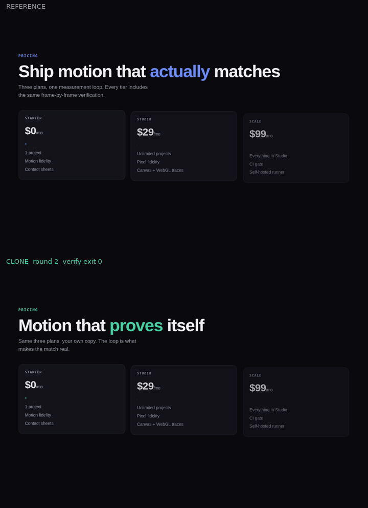
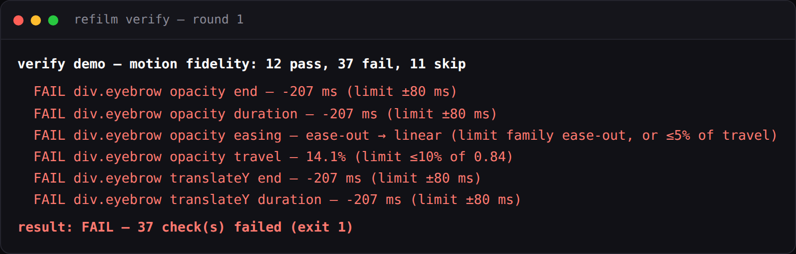
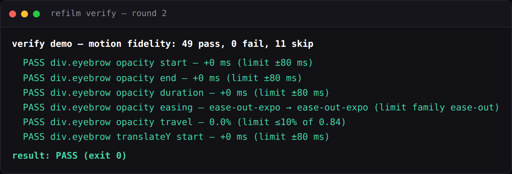

Node CLI · MIT · zero telemetry
Stop guessing. Measure the animation.
refilm records a reference animation, derives a numeric motion spec from the
evidence, then re-films your rebuilt copy and compares the two frame by frame
until timing, easing, stagger and layout match. refilm verify exits
1 while they do not.
npm install -g refilm
refilm doctorNode 20+, ffmpeg, Playwright's Chromium. No account, no API key, no telemetry.

The loop, and what each step produces
-
01
Record
Film the reference with the same viewport, trigger and duration you will use on the clone.
record -
02
Spec
One row per element per property: start, duration, from → to, easing, stagger.
spec -
03
Build
Implement in your own stack against the spec, not against a screenshot.
fit -
04
Verify
Re-film the clone the same way and check every spec row.
verify -
05
Fix
Each failure names a number and a cause. Change one thing, go again.
compare
Round 1 · result: FAIL — 37 check(s) failed (exit 1)


Round 2 · result: PASS (exit 0)


Go deeper
- Getting started install, doctor, first run
- The workflow the loop and the pass criteria
- Command reference every flag, every exit code
- Fidelity levels motion, pixel, mixed
- Reading a compare report what the numbers mean
- Canvas and 3D --gl, virtual clock, channels
- Determinism the byte-identical guarantee
- Using it from an agent --json, exit codes, CI
- Changelog every release